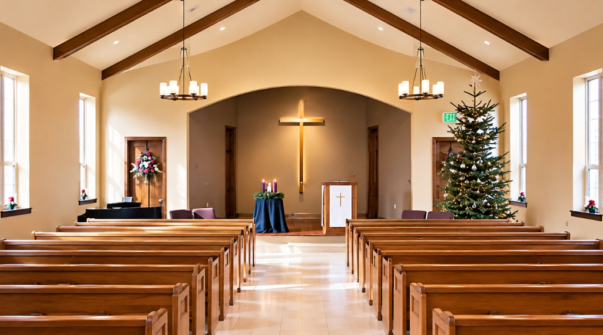
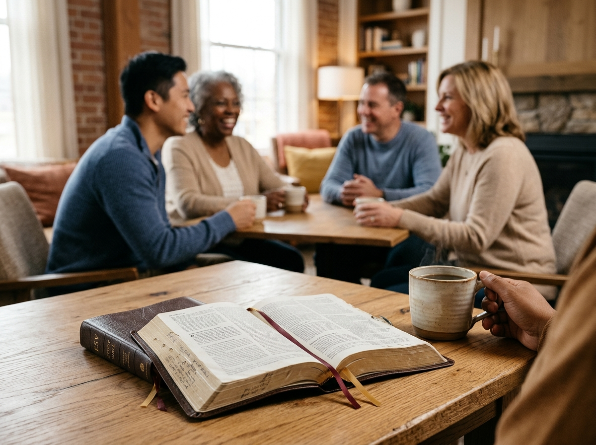
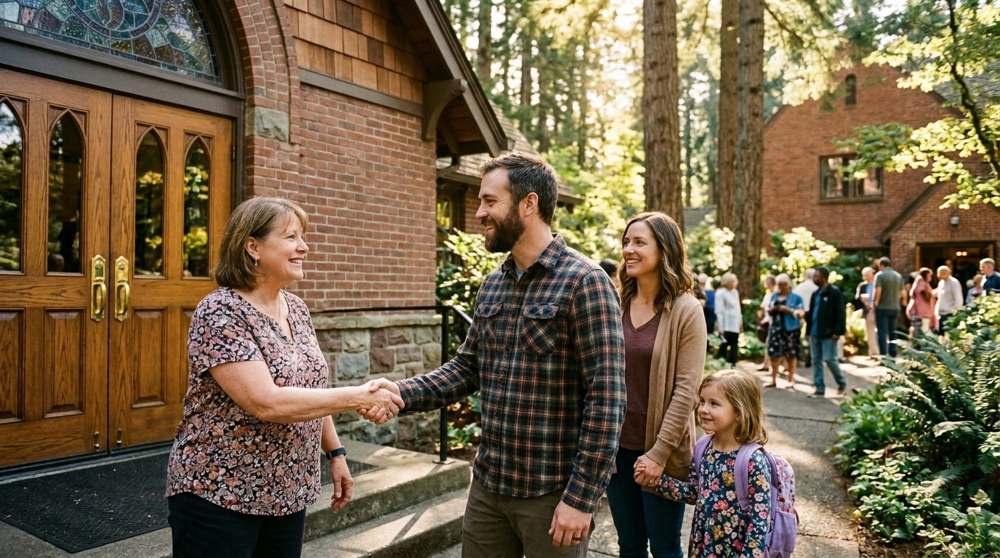
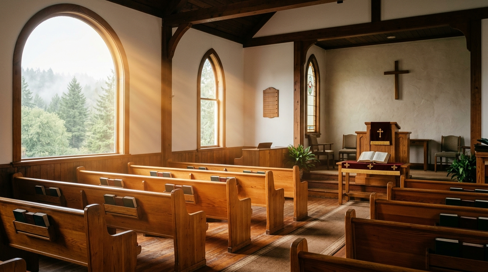

Sunday worship services
Join us in person every Sunday at 10:30 AM for Bible readings, singing, prayer, and exegetical preaching.

A small Baptist church in Hubbard, Oregon—gathering every Sunday at 10:30 AM for reverent worship, Scripture reading, prayer, and exegetical preaching.

Welcome to Christ Baptist Church! We are a small Baptist church in Hubbard, Oregon, dedicated to preaching God’s Word and ministering to our community. Conducting traditional Sunday services throughout the year, we walk together in brotherly love under Scripture.

Everything at Christ Baptist Church is centered on Scripture, reverent worship, and genuine care for families and neighbors across Hubbard and Woodburn.
Join us in person every Sunday at 10:30 AM for Bible readings, singing, prayer, and exegetical preaching.
Thoughtful teaching focused on helping believers deepen their knowledge of Christianity and God’s Word.
Grounded in the 1689 Second London Baptist Confession and united together by a clear Church Covenant.
Walking together in brotherly love—praying for one another and sharing the Gospel in our neighborhood.

We believe the local church is meant to be an anchor of truth and love. Every Lord’s Day we gather simply and reverently without distraction—reading Scripture, lifting our voices in hymns, praying together, and opening God’s Word.
Our doctrine follows the historic Second London Baptist Confession of Faith—32 chapters summarizing historic Christian belief and biblical church life.
All donations directly support our church ministry, care for neighbors in need, and the spread of the Gospel—giving visitors and members a hassle-free way to give online.
Prefer to mail an offering? Send checks to PO Box 611, Woodburn, OR 97071.
Every Sunday morning at 10:30 AM we gather at 2785 C Street in Hubbard for a reverent, traditional service incorporating Bible readings, congregational singing, prayer, and exegetical preaching.
Our Church Covenant outlines how we care affectionately for one another, pray together, raise households in the nurture of the Lord, and sustain a faithful evangelical ministry.
We affirm the 1677/89 Second London Baptist Confession of Faith—holding firmly to the authority of Scripture, salvation by grace alone through faith in Christ, and believer’s baptism.
Park comfortably right at 2785 C Street in Hubbard a few minutes before 10:30 AM. You won’t be singled out or pressured—just warmly greeted and welcomed into worship.
Need prayer or have questions about Christianity before Sunday? Call 503-732-6491 or use our contact form below to reach church leadership directly.
Send a Prayer RequestTraditional worship with Bible readings, singing, prayer, and exegetical preaching.
Growing in our knowledge of Christianity, Scripture, and the 1689 Baptist Confession.
At Christ Baptist Church, we welcome your questions and look forward to greeting you at our Sunday worship service in Hubbard.
Visitors can reach out directly from the homepage without decoding obfuscated emails.